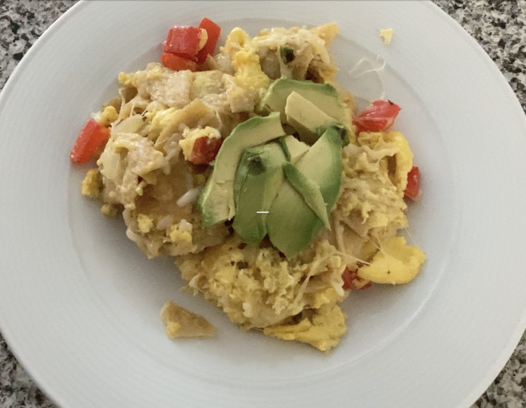

Chilaquiles

Description:
Chilaquiles is a traditional Mexican dish made from lightly fried corn tortillas covered in a flavorful salsa. It is a very versatile dish that can be costumized to your taste buds.
Serving Size: 3 people | 🕔 Time: 20 minutes | 🍴Type: Savory
Ingredients
- 5-6 Large Eggs
- 1 Onion
- 8 Corn Tortillas
- 1 Red Pepper
- Chihuahua Cheese
- Salsa
- Vegetable Oil
- Salt
- Pepper
- Avocado
Steps
- Cut up your tortillas into eighths.
- Whisk eggs in a bowl and add salt and pepper.
- Cut up your desired amonut of onions and peppers.
- Cover your heated pan with oil and add in your onions and peppers.
- After a few minutes add in your tortillas. Make sure that each one is coated in oil.
- Next, add in your eggs, let it cook for 1 minutes before mixing everything around.
- Add salsa on top and mix.
- Add cheese on top.
- Once the cheese is melted take the pan off the stove.
- Optional: Top with avocado :)
- Enjoy!
Back